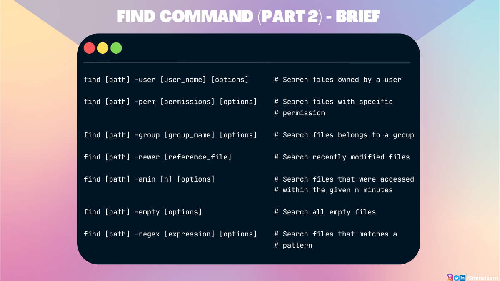
在本文中，让我们探索 find 命令的高级使用技巧。
如果您是第一次学习 find 命令，我在之前的教程中介绍了文件搜索的基础知识，并探讨了一些使用 Linux 快速搜索文件的强大命令。如果您还没有读过它并且还不熟悉 find，我强烈建议您通读一下然后再回到这里。
find 命令接受一个名为 user 的特殊参数，您可以使用它来过滤属于指定用户的文件。
语法如下所示：
find [path] -user [username] [options]假设您想搜索我拥有的所有文件（我在这台笔记本电脑上的用户名是 aruna）。您可以使用以下命令执行此操作：
find ./5minslearn/ -user aruna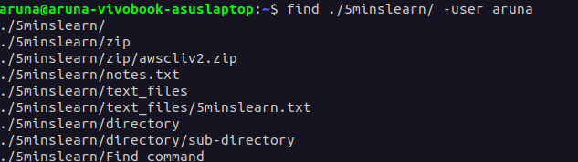
上述命令将列出 5minslearn 目录中用户 aruna 拥有的所有文件。
您可能会注意到添加到语法末尾的[options]。这意味着您可以在此之后添加任何参数，以使您的搜索更加有效。
例如，让我们尝试仅过滤我拥有的目录。要过滤目录，您必须添加-type 选项。这是它的命令：
find ./5minslearn/ -type d -user aruna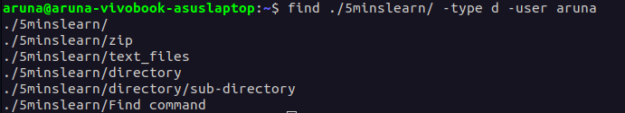
从上面的截图中，你可以看到这个命令列出了我在 5minslearn 目录中拥有的所有目录和子目录。
使用 -perm 参数，您可以搜索具有特定权限的文件。
语法如下：
find [path] -perm [permissions] [options]例如，假设您要搜索当前目录中所有具有只读权限的文件。只读文件的代码是 400。
find . -perm 400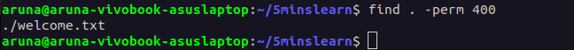
很久以前，我以只读权限创建了这个 welcome.txt 文件。从上面的截图可以看出，find命令已经完美的识别出来了。
我想分享我在工作中遇到的一个奇怪的经历。
我正在做一个项目，其中包含大量的小文件（大约200多个）。在这些文件中，我必须找到所有不是只读权限的文件。我很确定这种文件数目很少，我一只手就能数过来。
在 200 多个文件中查找最多 5 个文件是一个耗时的过程。所以，我决定另辟蹊径。
我在谷歌上搜索方案，对结果我感到惊讶。
我查询到我可以通过在 -perm命令前加上一个-not 标志来做到这一点。这是命令：
find . -not -perm 400该命令将列出当前目录中所有不是只读权限的文件。
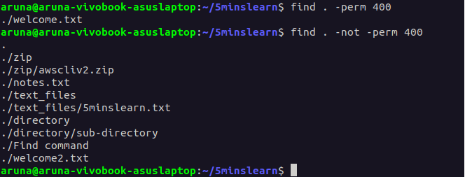
除此之外，您可以在 find 命令中的任何选项之前添加此 -not 标志以查找与搜索查询相反的内容。
这是给你的另一个例子：
find . -not -type f运行上述命令将列出当前目录中所有不是文件的项目（目录、符号链接等）。
在 find 命令中使用 -group 参数，您可以搜索属于某个组的所有文件。
语法是：
find [path] -group [groupname] [options]我的机器上有一个以我的名字命名的组。让我们尝试找到我的组拥有的所有文件。
find . -group aruna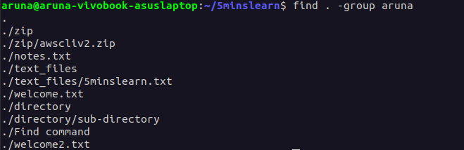
您还可以将 -group 选项与其他查找命令选项结合使用以优化搜索。
例如，您可以结合使用 -group 选项和 -perm 选项来搜索属于某个组并具有特定权限的文件。
find . -group aruna -perm 400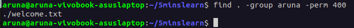
上面的命令将列出属于aruna 组的所有只读文件。
同样，正如我前面提到的，您还可以将 -group 选项与 -not 选项结合使用，以查找不属于特定组的文件。
让我们尝试查找不属于 sudo 组的文件。
find . -not -group sudo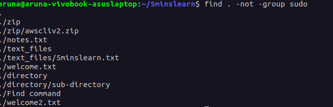
find 命令中的 -newer 选项搜索在给定文件的最后修改时间之后修改的文件。
语法如下所示：
find [path] -newer [reference_file]例如，如果要搜索在 notes.txt 文件之后修改的所有文件，可以使用以下命令：
find . -newer notes.txt此命令将搜索当前目录中在 notes.txt 文件最后修改时间之后修改的所有文件。
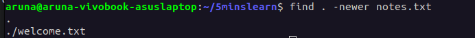
要搜索几分钟前访问过的文件，您可以使用 -amin 参数。此参数将接受分钟数 (n) 并查找 n 分钟前访问的所有文件。
语法是：
find [path] -amin [n] [options]例如，让我们尝试查找最近 30 分钟内访问过的文件：
find . -amin -30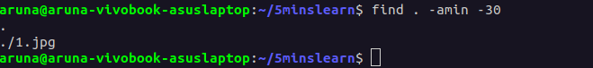
我希望您注意到数字前的负号（减号）。它表示该文件过去曾被访问过。
您可以在 find 命令中使用-empty 标志来搜索空文件和目录。
语法如下：
find [path] -empty [options]要搜索所有空文件和目录，可以使用以下命令：
find . -empty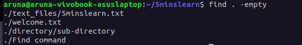
要仅搜索空目录，您可以将 -empty 选项与 -type 选项结合使用：
find . -type d -empty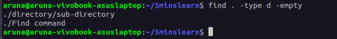
此命令将列出当前目录中的所有空目录。
-empty 标志可以附加 -delete 标志以删除所有空文件和文件夹。
-regex 参数允许您使用正则表达式 (RegEx) 应用过滤器。
语法如下所示：
find [path] -regex [expression] [options]例如，假设您要搜索名称以字母 w 开头的文件。您可以使用以下命令来执行此操作：
find . -regex "./w.*"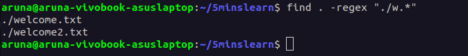
在本文中，您学习了一些有效搜索文件并对文件执行各种操作的高级技巧。
我建议您通过练习来学习 find 命令。自己想出一些场景，并尝试使用您学到的技术来查找文件。
[1] 之前的教程: //wangmaolin.net/article/kq1ezp5yrl.html[2] 通读一下: //wangmaolin.net/article/kq1ezp5yrl.html